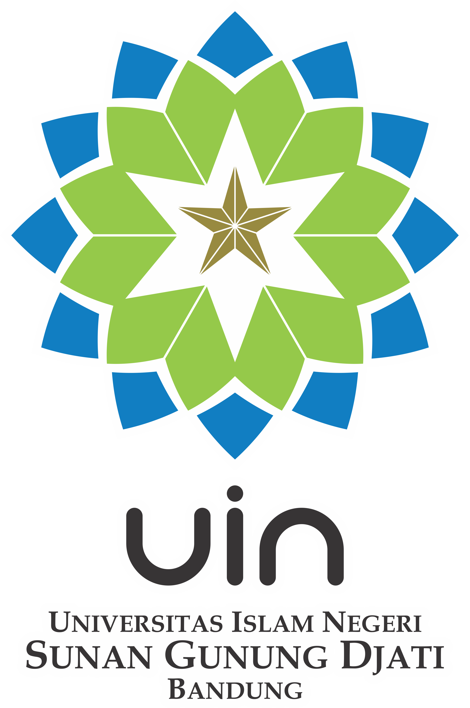

Klik Untuk Memulai

Penulis:
Akbar Tausiur Rido
Iman Firmansyah
Dosen Pengampu:
Dr. Ujang Suyatman, M. Ag.
Referensi Utama: Hoy, W. K., & Miskel, C. G. (2008)
(Hoy & Miskel, 2008; Fandholi dkk., 2023)
Bagaimana konsep & level budaya diterapkan di lembaga Islam?
Bagaimana nilai & norma diinternalisasikan?
Bagaimana iklim & organizational health dibangun?
Bagaimana mengelola resistensi perubahan budaya?
(Diadaptasi dari: Hoy & Miskel, 2008)
Menganalisis teori Hoy & Miskel serta penerapannya pada lembaga pendidikan Islam kontemporer.
Memadukan teori Barat dengan pijakan nilai keislaman.
Sumbang saran bagi kepala madrasah dalam mengelola iklim kerja.
(Hoy & Miskel, 2008; Holili & Fitriyah, 2025)
Penelusuran basis data akademik (2020-2026).
Buku Hoy & Miskel (2008) sebagai pisau analisis utama.
Interpretasi dalam konteks manajemen pendidikan Islam.
(Jaosantia & Shobri, 2025a; Hoy & Miskel, 2008)
(Hoy & Miskel, 2008)
Sistem orientasi bersama yang memberi identitas khas.
Ekspektasi informal dengan sanksi sosial langsung.
Keyakinan standar keberhasilan organisasi.
Keyakinan hakikat manusia yang sangat tahan perubahan.
(Hoy & Miskel, 2008)
Kualitas lingkungan yang berpijak pada persepsi kolektif.
Analogi: Budaya adalah baterai, Iklim adalah cahaya senter.
Saling hormat, pimpinan suportif.
Yakin atas keandalan, kejujuran, keterbukaan.
(Hoy & Miskel, 2008; Basyit, 2020)
(Hoy & Miskel, 2008; Huda, 2021)
(Hoy & Miskel, 2008; Wulandari & Nugroho, 2020)
Ketakutan atas ketidakpastian memicu penolakan. Ini bentuk pertahanan, bukan sekadar pembangkangan.
Pendekatan nilai keagamaan dan pelatihan profesional terbukti mengurangi kecemasan guru.
(Hoy & Miskel, 2008; Tiftazani dkk., 2025)
Q & A Session